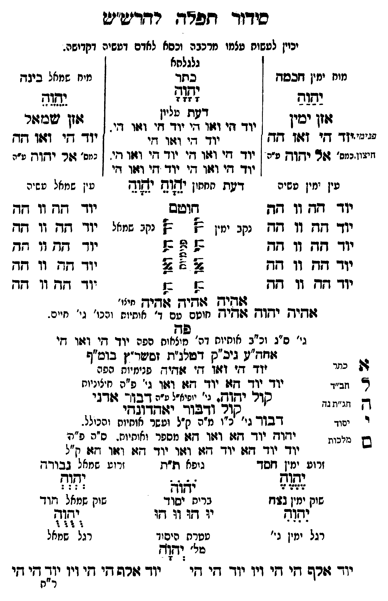

Neue Klartextfassung
[יכוין לעשות עצמו מרכבה וכסא לאדם דעשיה דקדושה.] === טבלה === [מוח ימין חכמה] יַהַוַהַ [אזן ימין] [פנימיות] יוד הי ואו הה [חיצוניות] אל יְהָוְהָ [?] [ע"ה] [גלגלתא — כתר] יָהָוָהָ [דעת עליון] יוד הי ואו הי יוד הי ואו הי. יוד הי ואו הי יוד הי ואו הי יוד הי ואו הי. יוד הי ואו הי יוד הי ואו הי [דעת תחתון] יֶהֶוֶהֶ יְהְוְהְ [מוח שמאל בינה] יֵהֵוֵהֵ [אזן שמאל] יוד הי ואו הה [כמס' אל יהוה ע"ה] [עין ימין עשיה — עין שמאל עשיה] יוד הה וו הה יוד הה וו הה יוד הה וו הה יוד הה וו הה יוד הה וו הה יוד הה וו הה יוד הה וו הה יוד הה וו הה יוד הה וו הה יוד הה וו הה [חוטם — נקב ימין ונקב שמאל] [שני סימנים גאומטריים של נקבי החוטם, מימין ומשמאל.] אהיה אהיה אהיה [מילו'] אהיה יהוה אהיה [חוטם עם ד' אותיות והכו' גי' חיים.] [פה] גי' ס"ג וכ"ב אותיות דה' מוצאות שפה יוד הי ואו הי אחה"ע גיכ"ק דטלנ"ת זסשר"ץ בומ"ף יוד הי ואו הי אהיה [פנימיות הפה] יוד יוד הא יוד הא ואו [גי' פ"ה חיצוניות] קול יהוה. [גי' יופיא"ל ע"ה] דבור אדני קול ודבור יאהדונהי דבור [גי' כ"ו מ"ה ק"ל ועשר אותיות והכולל.] יהוה יוד הא ואו הא [מספר ואותיות. ס"ה פ"ה] יוד יוד הא יוד הא ואו יוד הא ואו הא [ק"ל] [אלהים] א [כתר] ל [חב"ד] ה [חג"ת נ"ה] י [יסוד] ם [מלכות] [זרוע ימין חסד] יֶהֶוֶהֶ [זרוע שמאל גבורה] יְהְוְהְ [גופא ת"ת] יֹהֹוֹהֹ [שוק ימין נצח] יִהִוִהִ [שוק שמאל הוד] יֻהֻוֻהֻ [ברית יסוד] יוּהוּווּהוּ [רגל ימין גי'] [רגל שמאל] [עטרת היסוד] [מל'] יהוה יוד אלף הי הי ויו יוד הי הי יוד אלף הי הי ויו יוד הי הי === סוף טבלה ===
Original gegen neue OCR · Niqqud für Vergleich ausgeblendet
Original
[יכויןK129-001 לעשות עצמוK129-002 מרכבה וכסא לאדם דעשיה דקדושה.] === טבלה === [מוחK129-003 ימין חכמה] יהוה [אזן ימין] [פנימיות]K129-004 יוד הי ואו הה [חיצוניות] אל יהוה [ע"ה] [גלגלתא — כתר] יהוה [דעת עליון]K129-005 יוד הי ואו היK129-006 יוד הי ואו הי.K129-007 יוד הי ואו הי יוד הי ואו הי יוד הי ואו הי. יוד הי ואו הי יוד הי ואו הי [דעת תחתון] יהוה יהוה [מוח שמאל בינה] יהוה [אזן שמאל] יוד הי ואו הה [כמס' אל יהוה ע"ה] [עיןK129-008 ימין עשיה —K129-009 עין שמאל עשיה]K129-010 יוד ההK129-011 וו ההK129-012 יוד ההK129-013 וו ההK129-014 יוד ההK129-015 וו ההK129-016 יוד ההK129-017 וו ההK129-018 יוד ההK129-019 וו הה יוד הה וו הה יוד הה וו הה יוד הה וו הה יוד הה וו הה יוד הה וו הה [חוטם — נקב ימין ונקב שמאל] [שני סימנים גאומטריים של נקבי החוטם, מימין ומשמאל.] אהיה אהיה אהיה [מילו'] אהיה יהוה אהיה [חוטםK129-020 עם ד' אותיות והכו'K129-021 גי' חיים.] [פה]K129-022 גי' ס"ג וכ"ב אותיותK129-023 דה' מוצאות שפהK129-024 יוד הי ואו הי אחה"עK129-025 גיכ"ק דטלנ"ת זסשר"ץ בומ"ףK129-026 יוד הי ואו הי אהיה [פנימיות הפה] יוד יוד הא יוד הא ואו [גי'K129-027 פ"ה חיצוניות] קול יהוה. [גי' יופיא"ל ע"ה] דבור אדני קול ודבור יאהדונהי דבור [גי' כ"וK129-028 מ"ה ק"ל ועשר אותיות והכולל.] יהוה יוד הא ואו הא [מספר ואותיות.K129-029 ס"ה פ"ה]K129-030 יוד יוד האK129-031 יוד הא ואוK129-032 יוד הא ואו הא [ק"ל] [אלהים] א [כתר] ל [חב"ד] ה [חג"ת נ"ה] י [יסוד] ם [מלכות] [זרועK129-033 ימין חסד] יהוה [זרועK129-034 שמאל גבורה] יהוה [גופא ת"ת] יהוה [שוקK129-035 ימין נצח] יהוה [שוקK129-036 שמאל הוד] יהוה [ברית יסוד] יוהוווהו [רגלK129-037 ימין גי'] [רגל שמאל] [עטרת היסוד] [מל'] יהוהK129-038 יוד אלף הי הי ויו יוד הי הי יוד אלף הי הי ויו יוד הי הי === סוף טבלה ===K129-039
OCR · fehlbar
סידווךד דזפאדג רדדיש"יש יכייןK129-001 לעשות עלמוK129-002 מרכבה וכסא לאדם דעשיה דקדישה. גלגלחא מוחK129-003 ימין דזכסד כתד מיח שמאל ביגד גזשג2 נשדזש 233 נשות עשזד"גזזג דפת עליון שגיני יזדך דזי 1067 -ך ידדד דזי דזזד דזי ידד- אי 1047 דקץ וזישון כמס' 404 יךקךךק ע"ה ןK129-004 יוד דזי ד4:ו וזיK129-005 יוד זי וגוו וי. ן נמס' דזר יא"ח עזהK129-006 יוד י דזזד ד(יK129-007 יוד זגי דו חי עיןK129-008 ימין טשיה דטת חזון יאוש ישושK129-009 עין שמאל פשיה יודך דזדץ 11 717 דזושס יודך דדך וו גזדK129-010 יוד שד.K129-011 וו זד נקב ימ.ן בץ ב] נקב שמאלK129-012 יוד תדK129-013 וו דזד יוך זד: זו דזד בל ל ב:K129-014 יוד דזץK129-015 וו דזדK129-016 יוד דגץK129-017 וו וזך צץ 6 צלK129-018 יוד זגK129-019 וו דד ידךך דזדן 17 דזך ב[ בל יודך דשד וך דגד זווהיק גויך דיק חיו' 4זד[יךק ידקדק וקיק חוטםK129-020 עם ד' אותיוח וכו'K129-021 גי' חיים. נבלK129-022 גי' ס"ג וכ"ב אוחיוחK129-023 דה' אלח הפהK129-024 יוד די וזו דזי ווזז"טK129-025 גיכ"ק דפלג"ת זישו"ן בוס"ף 7: ניי יזד חזי וזזו די זזדזידח פגימיות הפה א זב"דK129-026 יוד ידך דזצן יודך דז דגוו גי'K129-027 פ"ה חיציניוח - ונ"ז גד סדר י שדק. ני' ייפיא"ל ט"ה בך"- זודגי ל קוד ודבוך. ישדדובחי ד יכוד דבוד גי' זכ"וK129-028 מ"ה ק"ל ועשר אוחיות והכילל. ש ייני: יזו ידך דז: דזו דזגו מספר ואותיוח.K129-029 ס"ה פ"תK129-030 יוד יוד דוK129-031 יוד -זז גזזוK129-032 יוד דז: וזנו דזל. ["ל זרועK129-033 ימין דזסד גופא ת"ת זרועK129-034 שמאל בגבודד אש[בל גג ישות :(ישוש':י יצאדךדץ : ':':: שוקK129-035 ימין בדדז בריס יסוד שוקK129-036 שמאל וד נדח יו ו וד דו ישן(ג רגלK129-037 ימין גי' טטרח היסוד רגל שמאל "-וז[ד יוך ז9רם דץי דזי ויו יודך זי די ידך זרש קי חי ויןK129-038 יוד דקי שי ר"חK129-039